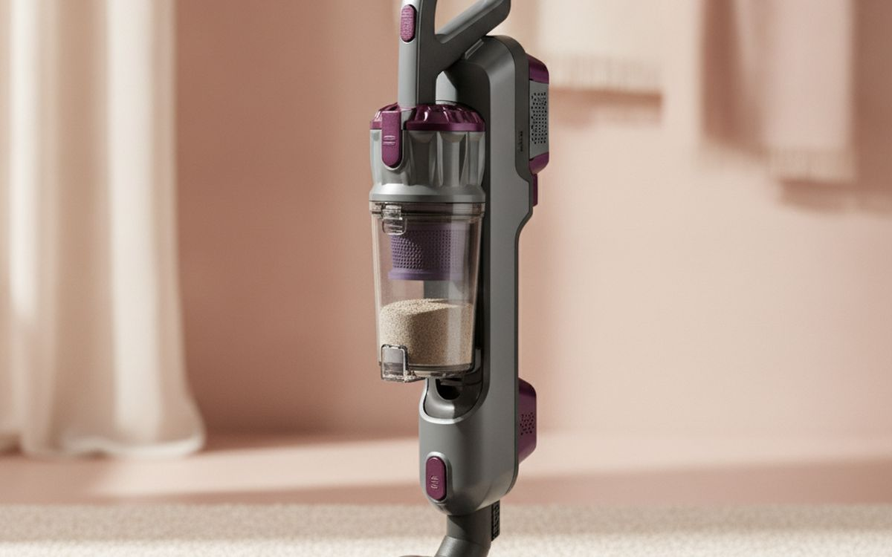
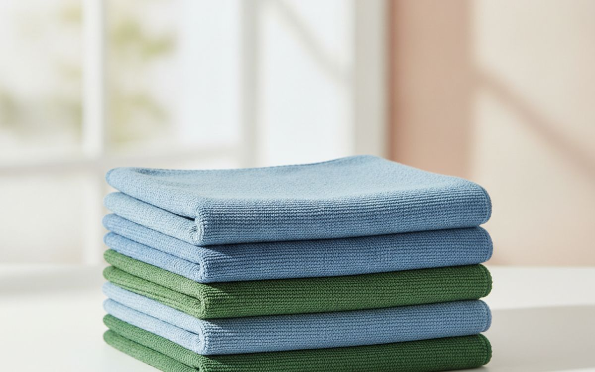
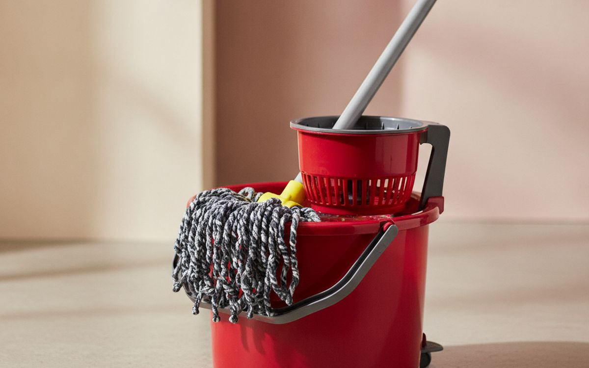
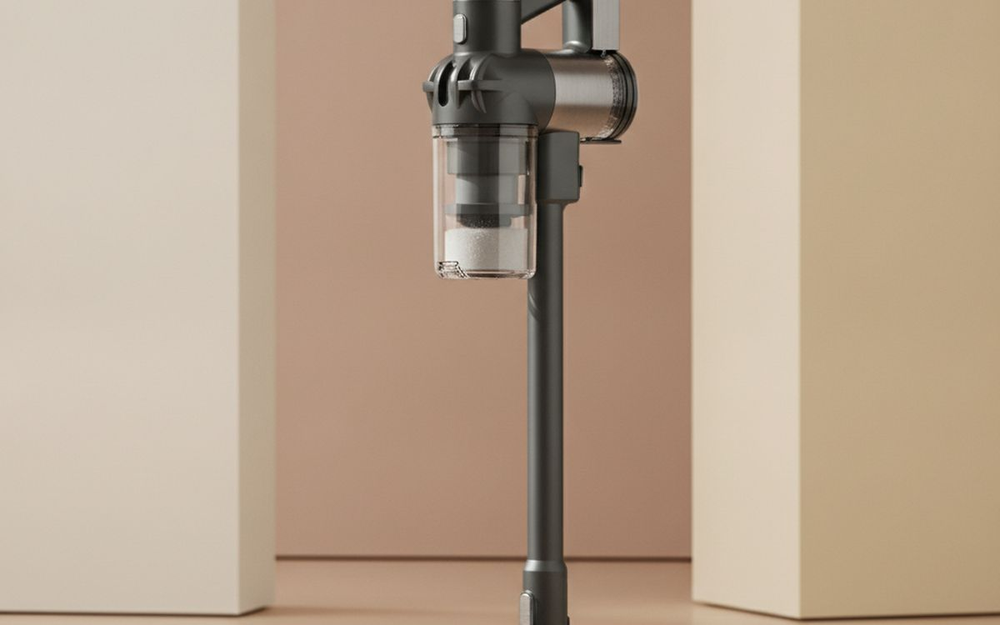
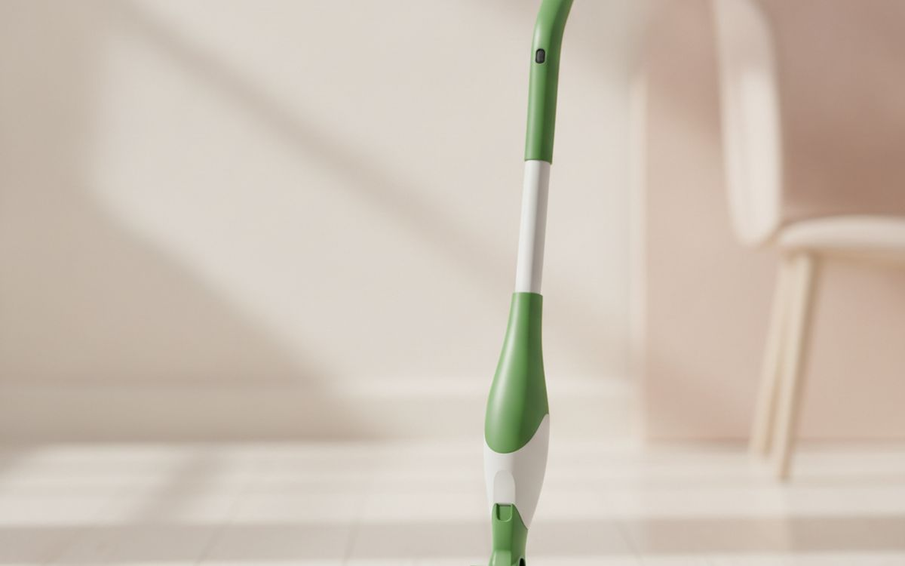
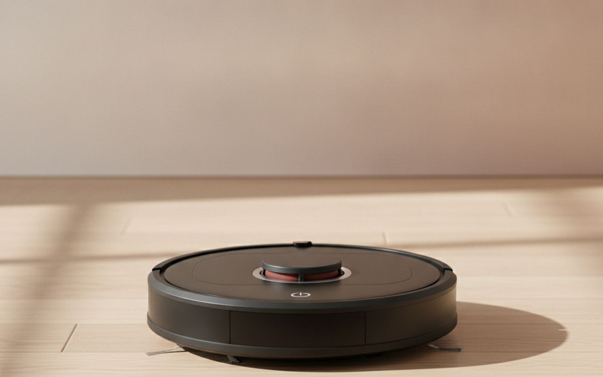
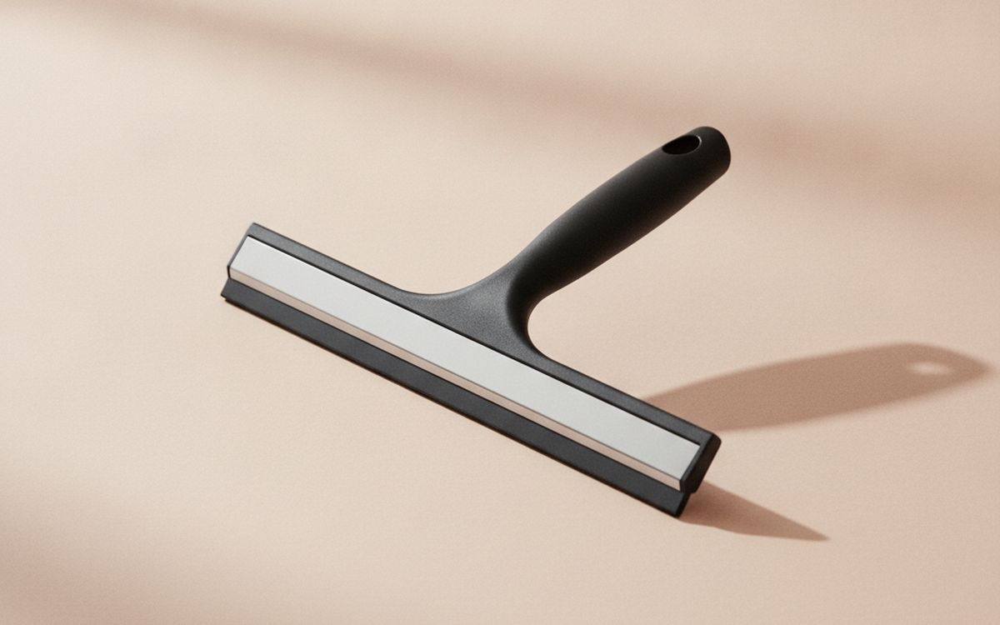
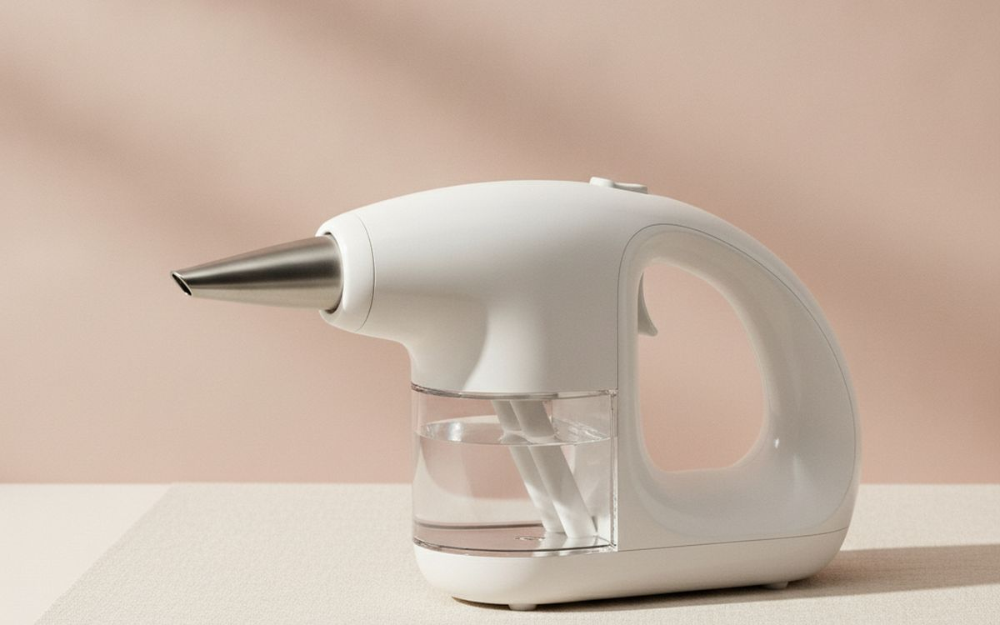
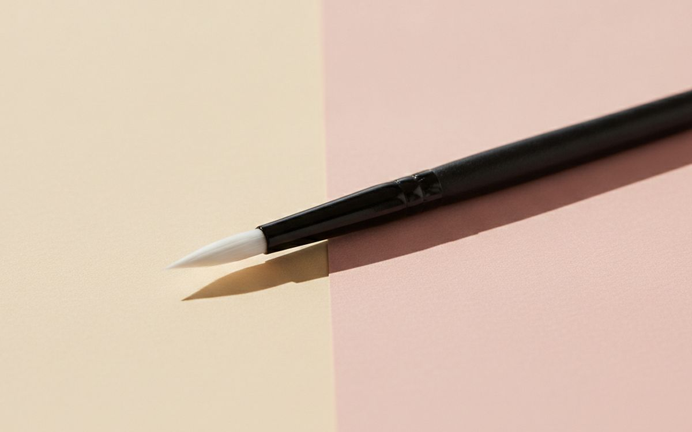
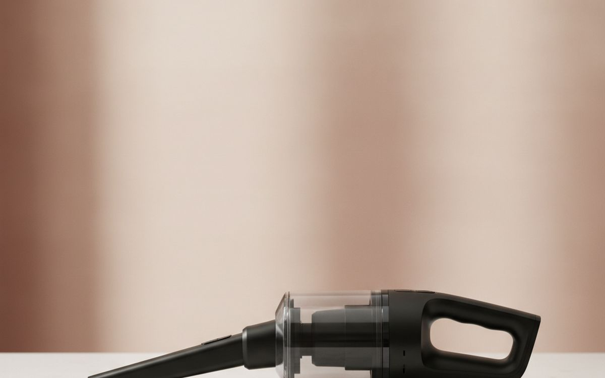

מדף הניקוי מלא בהבטחות. כל גאדג'ט חדש טוען שינקה את הבית שלכם ללא רבב במאמץ מינימלי. זה מוביל לעיתים קרובות לארון מלא בכלים יקרים, חד-תכליתיים שזוכים למעט שימוש. השיווק מתמקד לעיתים קרובות בחידוש ובמהירות, לא ביעילות אמיתית או בערך לטווח ארוך. קל להיסחף לרעיון שפתרון היי-טק יפתור את כל בעיות הניקוי שלכם, אבל עקרונות בסיסיים מנצחים לעיתים קרובות.
המדריך הזה חותך דרך רעש השיווק כדי להתמקד בכלים שמבצעים את העבודה באופן אמין. אנו מתעדפים עמידות, יעילות מוכחת וערך לכסף. יש דברים ששווה להשקיע בהם, בעוד שאחרים הם פשוט אריזה מתוחכמת לבעיה ישנה. נצביע על מקרים שבהם פתרון פשוט וזול זהה, או אפילו טוב יותר, ממכשיר חדש ונוצץ. אל תקנו את ההייפ; קנו תועלת.
בקצרה
Shark Navigator Lift-Away Professional NV356E
לניקוי חזק ועקבי
גילוי נאות. הקישורים בעמוד הזה הם קישורי שותפים. אם תקנו דרכם אנחנו עשויים להרוויח עמלה, בלי תוספת עלות לכם. זה לא משפיע על מה שנכנס לרשימה או על הסדר שלו.
איך בחרנו
אנו בוחרים מוצרים על סמך מידע זמין לציבור, דפוסי משוב משתמשים והבנה של מכניקת הניקוי. זה כולל הערכת עיצוב לנקודות כשל נפוצות, השוואת טענות ביצועים מול ציפיות מעשיות וזיהוי תועלת אמיתית לעומת תכונות המונעות על ידי שיווק. איננו עורכים בדיקות מעשיות של מוצרים אלה. המלצותינו נגזרות מניתוח מגמות שוק רחבות ומוניטין מוצר מבוסס, במטרה לספק תצוגה ברורה וחסרת פניות לצרכנים.
השוואה מהירה
המחירים הם הערכה נכון לזמן הכתיבה ומשתנים לעיתים קרובות.
הבחירות

01 · לניקוי חזק ועקביShark Navigator Lift-Away Professional NV356E
שואב אבק צינורי עם כבל מספק יניקה עקבית וחזקה שמודלים אלחוטיים מתקשים להתאים לה. דגם Shark זה הוא סוס עבודה, יעיל הן על שטיחים והן על רצפות קשות. תכונת ה-Lift-Away שלו מאפשרת לנתק את המיכל לניקוי מדרגות ופינות צרות, מה שמוסיף ורסטיליות. יש לו מיכל אבק גדול יותר מרוב שואבי המקל, מה שאומר פחות נסיעות לפח במהלך פעולת ניקוי. לניקוי יסודי ותחזוקה שוטפת של בתים גדולים, דגם צינורי חזק נותר בחירה מוצקה שפשוט עובדת.
$160-200על מה מוותרים: כבד ופחות זריז מאלחוטי
בעד
- כוח יניקה חזק ואמין
- קיבולת מיכל אבק גדולה
- ורסטילי עם מיכל נשלף
נגד
- כבד ופחות זריז מאלחוטי
- הכבל מגביל את טווח ההגעה ודורש חיבור מחדש

02 · אביזר הניקוי הרב-תכליתיAmazon Basics Microfiber Cleaning Cloths
מטליות מיקרופייבר הן אחד מכלי הניקוי היעילים והרב-תכליתיים ביותר שתוכלו להחזיק. הסיבים המיקרוסקופיים שלהם לוכדים אבק, לכלוך וזוהמה הרבה יותר טוב מכותנה. הן מצוינות לניקוי ללא פסים על זכוכית, מראות ופלדת אל-חלד, לעיתים קרובות רק עם מים. קנייתן בכמויות גדולות היא חסכונית. ניתן לכבס אותן במכונה ולעשות בהן שימוש חוזר מאות פעמים, מה שהופך אותן לבחירה בת קיימא. אל תזלזלו בכוחה של מטלית מיקרופייבר טובה; היא יכולה להחליף הרבה מגבונים חד-פעמיים ותרסיסים מיוחדים למשימות ניקוי בסיסיות ברחבי הבית.
$15-25על מה מוותרים: עלולות לשרוט משטחים עדינים אם נלכד בהן לכלוך
בעד
- סופגות מאוד ויעילות בלכידת לכלוך
- ניתנות לשימוש חוזר וכביסה במכונה
- משיגות תוצאות ללא פסים על משטחים רבים
נגד
- עלולות לשרוט משטחים עדינים אם נלכד בהן לכלוך
- דורשות כביסה קבועה לשמירה על יעילות

03 · לניקוי עמוק יותר של רצפות קשותO-Cedar EasyWring Microfiber Spin Mop & Bucket System
לניקוי יסודי של רצפות קשות, מערכת מגב ודלי מסורתית עם פדים איכותיים ממיקרופייבר יעילה לעיתים קרובות יותר ממגבים עם ריסוס. ה-O-Cedar EasyWring מאפשר לכם לשלוט בדיוק בלחות ראש המגב, דבר חיוני לסוגי רצפות שונים ולמניעת עודף מים. ראש המגב ממיקרופייבר לוכד לכלוך ביעילות וניתן לכבס אותו במכונה, מה שמפחית פסולת ועלויות לטווח ארוך. למרות שהוא דורש יותר מאמץ ממגב רובוטי או מגב עם ריסוס, הוא מספק ניקוי עמוק ומבוקר יותר, במיוחד עבור אזורים גדולים או לכלוך עיקש הדורש שפשוף.
$40-60על מה מוותרים: דורש דלי ויותר מאמץ פיזי
בעד
- שליטה מצוינת על לחות המגב
- ראש מגב ממיקרופייבר ניתן לשימוש חוזר וכביסה במכונה
- טוב לניקוי עמוק של אזורי רצפה קשה גדולים
נגד
- דורש דלי ויותר מאמץ פיזי
- הדלי תופס מקום אחסון

04 · לבלגן יומיומי, עבודה מהירהShark Stratos Cordless IZ862H
שואבי אבק אלחוטיים בצורת מקל מציעים נוחות ללא תחרות לניקיונות מהירים ותחזוקה יומיומית. ה-Shark Stratos מספק יניקה טובה ליחידה המופעלת על ידי סוללה, מה שהופך אותו מתאים לשיער חיות מחמד וללכלוך ביתי נפוץ הן על רצפות קשות והן על שטיחים בעלי סיבים נמוכים. העיצוב הקל שלו מקל על תמרון סביב רהיטים ומעלה מדרגות. למרות שהוא לא יחליף את כוח הניקוי העמוק של שואב צינורי עם כבל, הנגישות שלו מעודדת ניקוי תכוף יותר, מה שיכול לשמור על הבית שלכם מסודר יותר בסך הכל. הפשרה היא לרוב חיי סוללה ומיכל אבק קטן יותר.
$450-550על מה מוותרים: זמן פעולת סוללה מוגבל בהגדרות גבוהות יותר
בעד
- נוח מאוד לניקוי מהיר ותכוף
- קל משקל וקל לתמרון
- טוב לשיער חיות מחמד וללכלוך כללי
נגד
- זמן פעולת סוללה מוגבל בהגדרות גבוהות יותר
- מיכל אבק קטן דורש ריקון תכוף

05 · לניגוב מהיר של רצפות קשותSwiffer WetJet Hardwood Floor Spray Mop
לניקיונות מהירים על רצפות קשות, מגב עם ריסוס כמו ה-Swiffer WetJet נוח. הוא מבטל את הצורך בדלי ותמיסת ניקוי נפרדת, מה שהופך אותו לאידיאלי לשפיכות או לתחזוקה יומיומית קלה. מערכת הריסוס המשולבת מפזרת תמיסה ישירות על הרצפה, והפדים החד-פעמיים לוכדים לכלוך. בעוד שהעלות השוטפת של פדים ותמיסה קנייניים יכולה להצטבר לאורך זמן, קלות השימוש המוחלטת הופכת אותו לאופציה טובה לאנשים שמעריכים מהירות על פני ניקוי עמוק או חיסכון לטווח ארוך. הוא אינו תחליף למגב יסודי.
$25-40על מה מוותרים: עלות שוטפת של פדים ותמיסה קנייניים
בעד
- קל ומהיר מאוד לשימוש
- אין צורך בדלי, התקנה מיידית
- מתייבש במהירות, טוב ללכלוך קל
נגד
- עלות שוטפת של פדים ותמיסה קנייניים
- לא מיועד לשפשוף עמוק או לכלוך כבד

06 · לתחזוקת רצפה פסיביתEufy RoboVac 11S MAX
שואבי אבק רובוטיים כמו ה-Eufy RoboVac 11S MAX נתפסים בצורה הטובה ביותר ככלי תחזוקה, לא כמנקים עמוקים. הם יכולים לאסוף אבק יומי, פירורים ושיער חיות מחמד, מה שמפחית את התדירות שבה תצטרכו להשתמש בשואב אבק רגיל. דגם זה אמין בדרך כלל ושקט יותר ממתחרים רבים. הוא עוזר לשמור על רצפות במצב טוב עם מינימום מאמץ מצדכם, פועל לפי לוח זמנים. עם זאת, הוא לא יגיע לכל פינה, מתקשה עם מכשולים, ולא יכול להחליף את הכוח הממוקד של שואב המופעל על ידי אדם. נהלו ציפיות; זהו סיוע, לא תחליף.
$180-250על מה מוותרים: עלול להיתקע או לפספס אזורים
בעד
- מבצע אוטומציה של ניקוי רצפה קל יומי
- פעולה שקטה יחסית
- מפחית את תדירות השאיבה הידנית
נגד
- עלול להיתקע או לפספס אזורים
- לא מתאים לניקוי עמוק או לכלוך כבד

07 · לזכוכית ללא פסיםOXO Good Grips Squeegee
מגב איכותי הוא דרך זולה להשיג חלונות ודלתות מקלחת ללא פסים. דגם OXO Good Grips נוח לאחיזה ויש לו להב עמיד שמבצע מעברים נקיים ועקביים. שימוש במגב עם טכניקה נכונה, לעיתים קרובות עם מעט סבון כלים ומים, יעיל הרבה יותר משיטות ריסוס וניגוב עבור משטחי זכוכית גדולים. הוא מבטל מוך ופסים שמטליות משאירות לעיתים קרובות. למרות שנדרשת קצת תרגול כדי לשלוט בו, התוצאות עקביות ועליונות עבור זכוכית שמבריקה באמת ללא כתמים או שאריות.
$10-15על מה מוותרים: דורש תרגול לשימוש יעיל
בעד
- משיג תוצאות ללא פסים על זכוכית
- עמיד וזול
- יעיל יותר ממטליות עבור אזורי זכוכית גדולים
נגד
- דורש תרגול לשימוש יעיל
- עלול להשאיר טפטופים אם לא מטפלים בו כראוי

08 · לחיטוי ממוקדBissell SteamShot Handheld Hard Surface Steam Cleaner
מכשירי ניקוי בקיטור ידניים מציעים דרך ללא כימיקלים לחטא ולפרק לכלוך באזורים קטנים וממוקדים כמו פוגות, פינות או חריצי מכשירי חשמל. ה-Bissell SteamShot מחמם מים ליצירת קיטור בלחץ, שיכול לפרק לכלוך ולהרוג חיידקים מסוימים ללא חומרי ניקוי. הוא שימושי למשימות ספציפיות, אך אינו כוח מניע לניקוי בקנה מידה גדול. מיכל המים שלו קטן, דורש מילויים תכופים, ותפוקת הקיטור בינונית. השתמשו בו לטיפולים נקודתיים וחיטוי, אך אל תצפו שהוא יחליף שפשוף מסורתי עבור לכלוך כבד.
$40-60על מה מוותרים: מיכל מים קטן דורש מילוי תכוף
בעד
- ניקוי וחיטוי ללא כימיקלים
- יעיל לפירוק לכלוך עקשן באזורים קטנים
- שימושי לפוגות וחללים צרים
נגד
- מיכל מים קטן דורש מילוי תכוף
- כוח קיטור מוגבל למשימות ניקוי גדולות יותר

09 · לשפשוף פוגות עקשניותOXO Good Grips Grout Brush
פוגות הן אזורים שקשה לנקות באופן ידוע, ומברשת מיוחדת עושה הבדל משמעותי. ל-OXO Good Grips Grout Brush יש סיבים קשיחים ועמידים בצורה מיוחדת כדי להתאים לערוצי פוגה צרים. עיצוב זה מאפשר כוח שפשוף ממוקד שמברשת כללית אינה יכולה להתאים לה. למרות שהוא עדיין דורש מאמץ ידני ותמיסת ניקוי, קבלת הכלי הנכון למשימה ספציפית זו משפרת באופן דרמטי את התוצאות. אל תצפו שכל מברשת תעלים את כל שינוי הצבע באופן מיידי, אך שימוש עקבי עם כלי זה ימנע הצטברות וישמור על מראה נקי יותר של הפוגות.
$8-12על מה מוותרים: דורש מאמץ ידני ותמיסת ניקוי
בעד
- סיבים מעוצבים במיוחד לפוגות
- סיבים קשיחים מספקים כוח שפשוף יעיל
- ידית ארגונומית לשימוש נוח
נגד
- דורש מאמץ ידני ותמיסת ניקוי
- שימושי רק לפוגות, לא כלי רב-תכליתי

10 · לבלגנים קטנים ומיידייםBLACK+DECKER dustbuster AdvancedClean+ Cordless Handheld Vacuum (CHV1410L)
שואב אבק ידני, המכונה לעיתים קרובות dustbuster, אידיאלי להתמודדות עם בלגנים קטנים ומיידיים כמו פירורים שנשפכו, מזון לחיות מחמד או לכלוך שנכנס עם נעליים. ה-BLACK+DECKER CHV1410L מציע יניקה סבירה לגודלו ותמיד מוכן לשימוש בזכות בסיס הטעינה שלו. הוא לא מיועד לאזורים גדולים או לניקוי עמוק, אך הנוחות שלו גורמת לכך שסביר יותר שתטפלו בשפיכות קטנות לפני שהן הופכות לבעיות גדולות יותר. התייחסו אליו כמנקה נקודתי ללכלוך יבש, מצוין לסידור מהיר במטבחים, מכוניות או סדנאות. חיי הסוללה יכולים להוות מגבלה לשימוש ממושך.
$50-70על מה מוותרים: כוח יניקה מוגבל בהשוואה לשואבים גדולים יותר
בעד
- מהיר ונוח לשפיכות קטנות
- קל לריקון ותחזוקה
- תמיד טעון ומוכן לשימוש
נגד
- כוח יניקה מוגבל בהשוואה לשואבים גדולים יותר
- חיי סוללה קצרים לשימוש רציף
שאלות נפוצות
האם מגבונים או תרסיסי ניקוי באמת נחוצים לניקוי יומי?
מגבונים ותרסיסי ניקוי לשימוש כללי רבים נוחים, אך לעיתים קרובות אינם נחוצים. עבור רוב המשימות השגרתיות, מטלית מיקרופייבר טובה לחה במים רגילים, או מים עם כמות קטנה של סבון כלים, יעילה ביותר. מנקים מיוחדים שימושיים לבעיות ספציפיות כמו אבנית, שומן, או חיטוי משטחים לאחר מחלה. עם זאת, לאבק, לניגוב משטחים או לניקוי זכוכית, מטלית מיקרופייבר איכותית יכולה להשיג תוצאות מצוינות ללא העלות והפסולת הקשורים למוצרים חד-פעמיים ולפתרונות כימיים שונים. פשוט יותר הוא לעיתים קרובות טוב יותר.
האם כדאי לי לקנות מגב רובוטי?
מגבים רובוטיים, כמו שואבי אבק רובוטיים, הם בעיקר כלי תחזוקה. הם יכולים לעזור לשמור על מראה טוב של רצפות קשות בין ניקיונות עמוקים יותר, אך הם בדרך כלל אינם מספקים את כוח השפשוף הדרוש ללכלוך כבד או לשפיכות יבשות. הם משתמשים לעיתים קרובות במיכלי מים קטנים ובלחץ מוגבל, מה שאומר שהם מחליקים על פני השטח במקום לחפור פנימה. אם המטרה שלכם היא להפחית את תדירות הניגוב הידני לאבק קל ולכלוך פני שטח, זו יכולה להיות אופציה. לרצפה נקייה באמת, מגב מסורתי עם פדים רב-פעמיים עדיין יהיה יעיל וחסכוני יותר.
האם מגב קיטור שווה את ההשקעה לכל הרצפות?
מגבי קיטור יכולים להיות יעילים לחיטוי וניקוי של סוגי רצפות קשות רבות ללא כימיקלים, מה שמושך. הם משתמשים בקיטור חם כדי לפרק לכלוך ולהרוג כמה חיידקים. עם זאת, הם אינם מתאימים באופן אוניברסלי. גימורים מסוימים של רצפות, כמו עץ קשיח אטום מסוים, עלולים להינזק מחום או לחות מופרזים לאורך זמן, מה שמוביל לעיוות או עמימות. בדקו תמיד את המלצות יצרן הרצפה שלכם. עבור אריחי קרמיקה או לינוליאום, הם יכולים לעבוד היטב. לניקוי עמוק, הם לעיתים קרובות מתקשים עם לכלוך אמיתי שחודר, מה שדורש טיפול מקדים או שפשוף ידני לכתמים קשים.
באיזו תדירות עלי להחליף את כלי הניקוי שלי?
אורך החיים של כלי ניקוי משתנה, אך רבים מתוכננים לעמידות אם מתוחזקים כראוי. יש לנקות או להחליף מסנני שואב אבק לפי לוח הזמנים של היצרן, בדרך כלל כל 3-6 חודשים, כדי לשמור על יניקה. ניתן לכבס ראשי מגב ומטליות מיקרופייבר מאות פעמים; החליפו אותם כאשר הם מתחילים להתפרק, לאבד ספיגה, או להיראות בלויים ולא מנקים ביעילות. יש להחליף מברשות כאשר הסיבים מתכופפים או נשחקים. אל תחליפו כלים רק בגלל שדגם חדש יוצא; החליפו אותם כאשר הביצועים שלהם יורדים באופן אמיתי.
הדילים של היום
ראו מה מוזל עכשיו.
דילים →← כל המדריכים
איננו שותפים של אמזון ואיננו מרוויחים דבר מקישורים לאמזון. כשותפים של עליאקספרס אנחנו מרוויחים עמלה מרכישות מזכות. המחירים והזמינות נכונים לזמן הפרסום ועשויים להשתנות.